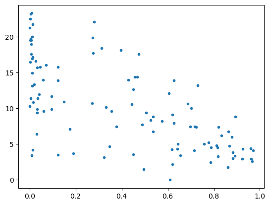

Return to Course Home Page
TryPy 1 - Exploring St. Louis Blood Toxicity Data
Part 0. Setup Steps
- Create a repo on GitHub named
eds217-trypy-01 - Clone to create a version-controlled project
- Create some subfolder infrastructure (docs, data)
- Create a new
quarto in RStudio calledjupyter notebookeds-217-trypy.ipynb. If working on your local machine, make sure to associate the notebook with theeds-217environment.
Part 1 - Get the data
"""
Create a new variable containing
the link to the .csv file on
the EDS_221 github repository.
"""
url = 'https://raw.githubusercontent.com/'\
'allisonhorst/EDS_221_programming-essentials/'\
'main/activities/stl_blood_lead.csv'
"""
pandas can read a csv file into a
dataframe directly from a url:
"""
stl_lead = pd.read_csv(url)Read more about the data here.
Part 2 - Explore the data
Create a new notebook, or this notebook:
- Create a code cell that imports the
numpyandpandaspackages and run the cell to import the packages. - Use the code above to read the url for
stl_blood_lead.csvinto a pandas DataFrame calledstl_lead - Do some basic exploration of the dataset using the DataFrame
infoanddescribecommands. - In a new code chunk, from
stl_leadcreate a new column calledprop_whitethat contains the percent of each census tract identifying as white (variablewhitein the dataset divided by variabletotalPop, times 100).
Hint: df['new_col'] = df['col_a'] / df['col_b'] will create a new column new_col that contains the value of col_a / col_b
Part 3 - Create a scatterplot
- Import matplotlib (
import matplotlib.pyplot as plt) - Create a scatterplot graph of the percentage of children in each census tract with elevated blood lead levels (
pctElevated) versus the percent of each census tract identifying as white.
Part 4 - Create a histogram
- Create a histogram of only the
pctElevatedcolumn in the data frame - Customize the fill, color, and size aesthetics - test some stuff! Feel free to make it awful.